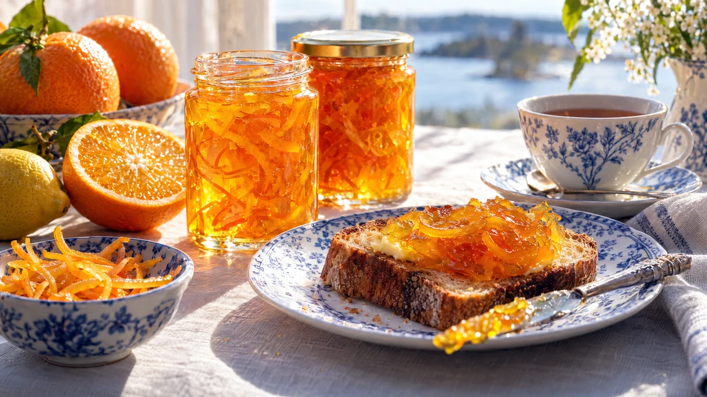

RESTFEST · RECEPTSylt, saft & inlagt
Apelsinmarmelad med tunt skurna skal
Tre apelsiner och en citron ur fruktskålen, socker och lite tålamod. Skalen skärs i tunna strimlor och kokas tills de blir mjuka och genomskinliga, svävande i en klar, gyllene gelé. Bittersöt brittisk frukostmarmelad som lyser som solsken på frukostbordet.
- Förberedelse
- 30 min
- Tillagning
- 2 tim
- Portioner
- ca 9 dl (3–4 burkar)
- Nivå
- Medelsvårt
Bra att veta. Diska burkar, flaskor och lock noga och skålla dem med kokande vatten precis före användning, eller värm glaset i ugnen på 125 grader i 10 minuter. Fyll dem medan innehållet är varmt och skruva på locket direkt. Förvara öppnade burkar i kylen och använd alltid en ren sked.
 Det här behöver du
Det här behöver du
Tryck på + vid det du behöver köpa.
Gör så här
- Skrubba frukten. Dela apelsinerna och citronen på mitten och pressa ur saften. Spara kärnorna, de innehåller pektin som får marmeladen att stelna. Knyt in kärnorna och hinnorna från pressen i gasväven.
- Dela skalhalvorna och skär dem i tunna strimlor, ca 2 mm. Den vita hinnan får sitta kvar.
- Lägg skal, saft, vatten och kärnpåsen i en stor kastrull. Låt sjuda under lock i ca 1½ timme, tills skalen är helt mjuka och går att mosa mellan fingrarna. Skalen mjuknar inte mer när sockret väl är i.
- Ställ en tallrik i frysen till geléprovet. Lyft upp kärnpåsen och krama ur den över kastrullen med en sked.
- Tillsätt sockret och rör på låg värme tills det har löst sig.
- Höj värmen och låt marmeladen koka kraftigt utan lock i 15–25 minuter, tills den håller 104–105 grader på en termometer eller klarar geléprovet: en droppe på den kalla tallriken ska skrynkla sig när du drar ett finger genom den. Rör då och då längs botten.
- Ta kastrullen från värmen och låt stå i 10 minuter, så att skalen fördelar sig jämnt och inte flyter upp. Rör om, fyll varma burkar och skruva på locken direkt.
Dekoration och servering
- Fyll marmeladen i små, raka glasburkar, så att skalstrimlorna syns genom glaset.
- Servera på rostat bröd med salt smör, till filmjölksscones (recept 60) eller till lagrad ost.
- En sked marmelad blir en blank glasyr på julskinkan.
- Har marmeladen inte stelnat efter ett dygn, häll tillbaka den i kastrullen och koka några minuter till.
- Vill du vara säker på att den stelnar, byt strösockret mot syltsocker och följ förpackningens koktid.
- Oöppnade burkar håller ca 6 månader i ett svalt skafferi. En öppnad burk håller ca 1 månad i kylen.
Mått och ugnstemperaturer
Måtten är svenska (dl, msk, tsk, krm). Ugnstemperaturerna gäller vanlig ugn med över- och undervärme; med varmluft, sänk med 20 grader.